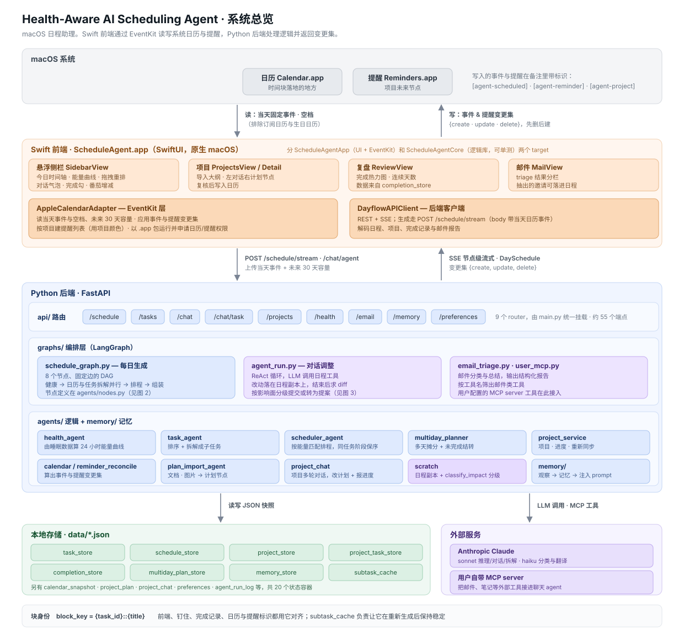
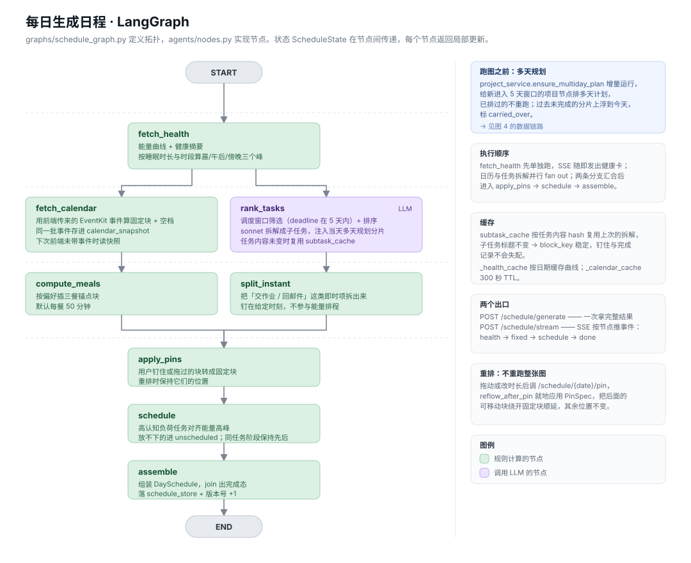
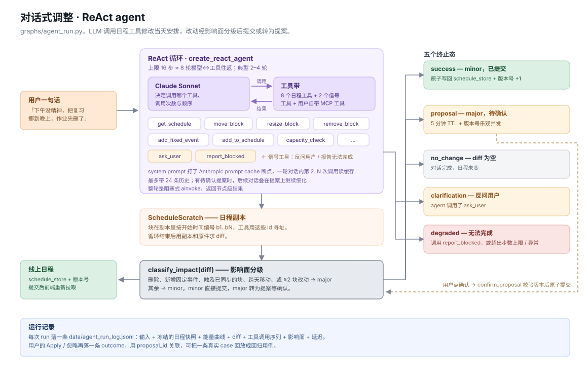
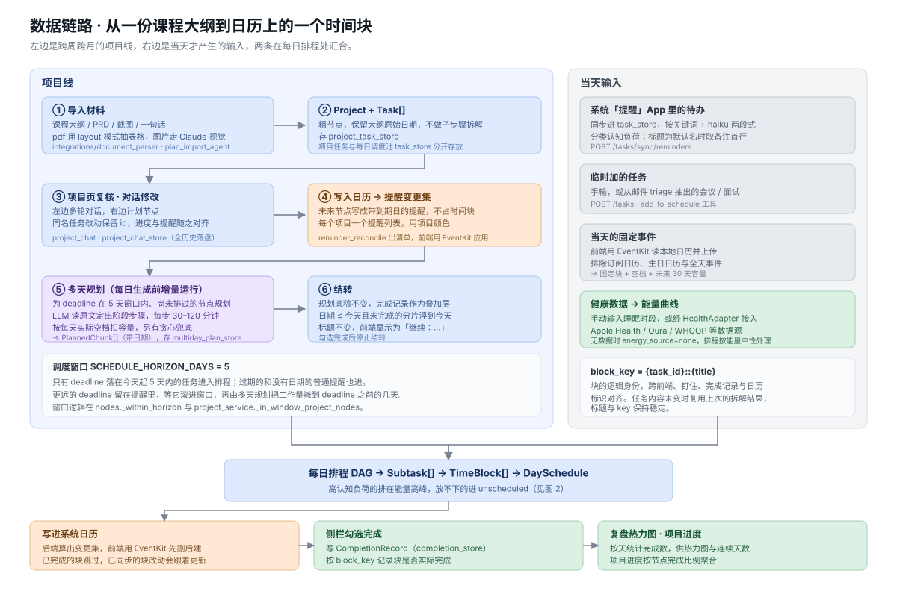

一个 macOS 日程助理。它读你的睡眠状况算出当天的能量曲线，把课程大纲、待办和日历上的固定事件揉成一份排好的日程， 再用一句自然语言就能改。Swift 前端通过 EventKit 读写系统日历与提醒，Python 后端处理逻辑并返回变更集。
四层：macOS 系统 App、Swift 前端、Python 后端、本地 JSON 存储。前后端之间流动的是变更集 {create, update, delete}，
由前端用 EventKit 应用到系统日历与提醒。

8 个节点、固定边的 DAG。健康节点先出结果让 SSE 立刻推送，日历与任务拆解并行，汇合后进入排程与组装。

LLM 调用日程工具修改当天安排。改动落在日程副本上，循环结束后求 diff，按影响面分级：minor 直接提交，major 转为提案等确认。

一份课程大纲怎么变成日历上的一个时间块：导入 → 复核 → 提醒 → 多天规划 → 每日排程 → 写回日历 → 完成记录 → 复盘。
